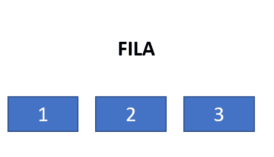

Como sugestão, configure a opção de leitura de caracteres e de pontuação de seu leitor de tela para o grau máximo de leitura, para que os códigos disponibilizados neste material sejam lidos corretamente. No caso do NVDA (Nonvisual Desktop Access), para localizar a opção Grau de pontuação/símbolos, acesse Preferências – Configurações – Fala. Altere o padrão Pouco para Tudo. Dessa forma, o leitor passará a ler os segmentos de código em sua totalidade.
Estruturas de dados são meios de organizar e manipular informações de modo que as operações sobre elas sejam eficientes. Por exemplo, é muito mais eficiente e intuitivo manipular uma série de números em um vetor do que em muitas variáveis separadas. Além de prover uma maneira de guardar informações, as estruturas devem permitir operações para acesso e manipulação desses dados. No caso dos vetores, os índices permitem um acesso rápido à determinada informação.
Sem conhecer estruturas de dados, o programador pode escrever programas e chegar a uma solução correta, mas que provavelmente será menos eficiente do que se aplicasse a estrutura adequada.
As classes em si são um tipo de estrutura de dados que guardam informações e permitem a criação de métodos para manipulá-las. É a partir de classes que muitas outras estruturas de dados são possíveis, como listas ligadas, árvores, pilhas, filas, entre outras.
Para um bom aproveitamento, siga esta leitura realizando e testando os exemplos demonstrados. Crie um projeto no PYCHARM para cada exemplo ou modifique um código já existente. Execute, realize modificações e teste para entender como cada estrutura funciona.

Tipos genéricos permitem que você escreva um código que possa trabalhar com diferentes tipos de dados, mantendo a flexibilidade e a segurança. Em vez de definir tipos de dados específicos, você pode criar funções e classes que funcionem com tipos indefinidos, permitindo que os tipos sejam especificados quando o código é utilizado.
Em Python, os tipos genéricos são declarados usando o módulo typing. O tipo genérico mais comum é List, que representa uma lista que pode conter elementos de qualquer tipo. Veja um exemplo:
from typing import List
def imprime_lista(lista: List[int]):
for elemento in lista:
print(elemento)
minha_lista = [1, 2, 3, 4, 5]
imprime_lista(minha_lista)
segunda_lista=["segunda-feira", "terça-feira", "quarta-feira", "quinta-feira", "sexta-feira", "sábado", "domingo"]
imprime_lista(segunda_lista)
Nesse exemplo, a função imprime_lista é declarada para aceitar uma lista de inteiros, mas a mesma função pode ser usada com outros tipos de dados simplesmente especificando o tipo desejado ao chamar a função.
Saída na console
1
2
3
4
5
segunda-feira
terça-feira
quarta-feira
quinta-feira
sexta-feira
sábado
domingo
Process finished with exit code 0
Você também pode criar classes genéricas para trabalhar com tipos desconhecidos. Por exemplo, você pode criar uma classe Caixa, que pode conter qualquer tipo de objeto.
from typing import TypeVar
T = TypeVar('T')
class Caixa:
def __init__(self, conteudo: T):
self.conteudo = conteudo
minha_caixa = Caixa("Olá, Python!") # tipo String
outra_caixa =Caixa(42) # tipo inteiro
print(minha_caixa.conteudo)
print(outra_caixa.conteudo)
Aqui foi usado TypeVar para criar um tipo genérico T, que pode ser qualquer tipo de dado. Isso permite que a classe Caixa seja parametrizada com diferentes tipos, tornando-a flexível.
Tipos genéricos são uma adição valiosa ao arsenal de Python, tornando-o ainda mais versátil e adequado para lidar com uma ampla variedade de situações. Com tipos genéricos, você pode escrever um código mais seguro, legível e flexível, economizando tempo e evitando erros. À medida que você explora Python, considere a integração de tipos genéricos em seus projetos para aproveitar ao máximo essa funcionalidade.
Pilhas são listas de valores que simulam uma pilha de objetos. Pense por exemplo em pratos empilhados em um restaurante buffet. Você irá pegar o prato do topo dessa pilha, e não o da base. Os funcionários do restaurante farão a reposição incluindo novos pratos acima do que está no topo.
Da mesma maneira acontece com uma estrutura de dados pilha: um valor, quando é incluindo, vai ao topo da pilha e quando é retirado também sai do topo. Daí a denominação comum de que se trata de uma estrutura LIFO – Last in, Fist out, ou “último a entrar, primeiro a sair”. Isso significa que o último valor incluído é o primeiro a ser excluído.
As pilhas utilizam apenas as operações de empilhar (geralmente chamado “push”) para incluir dados e desempilhar (“pop”) para excluir; geralmente ainda acompanham de um método peek, usado para verificar qual valor está no topo da pilha sem retirá-lo, como mostra o gif a seguir:
Funcionamento de uma pilha. pop(). Inclui um valor no topo; push() recupera e retira
o valor do topo
Fonte: Senac EAD (2024)
imagem exemplificando pilha. Há três caixas ao centro, uma embaixo da outra; a de cima tem o número três, abaixo o número dois e abaixo o um. Do lado direito da caixa de número três, há a palavra “topo”, e ao lado da caixa um há a palavra “base”. À esquerda, surge a expressão “push()” e uma caixa com o número quatro. Em seguida, essa caixa se move até acima da três e “topo” passa para o lado da quatro. Depois, “pop()” se apaga e surge a expressão “push()”. O quatro sai do topo da pilha e a palavra “topo” volta a descer para o três.
Um uso clássico de pilhas acontece no próprio sistema operacional. Processos de sistema geralmente iniciam outros processos, que iniciam outros. Constrói-se assim uma pilha de processos, uma vez que o último processo iniciado deve ser finalizado para que o anterior (que chamou o último) possa ser processado ou finalizado, e assim por diante.
Outra aplicação clássica de pilhas acontece nos compiladores, para verificar a abertura e o fechamento de parênteses em uma expressão lógica, por exemplo. Assim, por meio de uma pilha de caracteres, pode-se validar a seguinte expressão:
(x * (y - 2) / (10 + z)))
É possível percorrer a expressão e usar pilha para empilhar valor ao encontrar (e desempilhar ao encontrar). Se a expressão estiver correta, a pilha estará vazia ao final. No exemplo acima, esse algoritmo mostraria que a expressão está incorreta, pois ao alcançar o último caractere) a pilha já estará vazia.
Em qualquer situação análoga em que a última informação incluída tenha que ser processada antes que a anteriormente incluída, podemos aplicar pilhas.
Em Python, é relativamente fácil implementar uma pilha usando uma lista (ou array) nativa. Veja um exemplo de como criar uma pilha em Python:
class Pilha:
def __init__(self):
self.items = []
def push(self, item):
self.items.append(item)
def pop(self):
if not self.is_empty():
return self.items.pop()
else:
return None
def peek(self):
if not self.is_empty():
return self.items[-1]
else:
return None
def is_empty(self):
return len(self.items) == 0
def size(self):
return len(self.items)
As pilhas têm uma ampla gama de aplicações em programação. A seguir, veja alguns exemplos.
Pilhas são uma estrutura de dados poderosa e versátil em programação. Elas facilitam o gerenciamento de elementos em ordem LIFO, tornando-as valiosas em diversas aplicações. Implementar e compreender o uso de pilhas em Python é uma habilidade fundamental para qualquer desenvolvedor, pois permite solucionar uma ampla variedade de problemas de forma eficaz e eficiente. Portanto, ao enfrentar problemas que envolvem o gerenciamento de elementos em ordem específica, considere o uso de pilhas como uma ferramenta valiosa em seu conjunto de habilidades de programação.
Imagine que será necessário implementar um código para organizar e determinar quais carros devem sair de um caminhão-cegonha. Os carros estão enfileirados, mas o último a entrar será o primeiro a sair.
Nessa aplicação, será solicitado o nome de cada carro e depois apresentada a ordem em que eles sairão do caminhão. Será considerado apenas um dos andares do veículo de transporte.

Caminhão-cegonha
Fonte: https://ohanatransportes.com.br
imagem exemplificando pilha. Há três caixas ao centro, uma embaixo da outra; a de cima tem o número três, abaixo o número dois e abaixo o um. Do lado direito da caixa de número três, há a palavra “topo”, e ao lado da caixa um há a palavra “base”. À esquerda, surge a expressão “push()” e uma caixa com o número quatro. Em seguida, essa caixa se move até acima da três e “topo” passa para o lado da quatro. Depois, “pop()” se apaga e surge a expressão “push()”. O quatro sai do topo da pilha e a palavra “topo” volta a descer para o três.
Teste com os valores “fusca”, “chevette” e “opala” para verificar que o resultado final será “opala, chevette, fusca”.
Digite o nome do carro (ou digite 'sair' para encerrar): fusca
Digite o nome do carro (ou digite 'sair' para encerrar): chevette
Digite o nome do carro (ou digite 'sair' para encerrar): opala
Digite o nome do carro (ou digite 'sair' para encerrar): sair
Ordem de saída dos carros:
1. opala
2. chevette
3. fusca
Process finished with exit code 0
def main():
pilha = [] # Inicializa uma lista vazia para representar a pilha
while True:
try:
numero = int(input("Informe um número inteiro (ou digite '0' para encerrar): "))
except ValueError:
print("Por favor, digite um número inteiro válido.")
continue
if numero == 0:
break
if not pilha or numero > pilha[-1]:
pilha.append(numero)
else:
print("O número não é maior que o último número informado. Tente novamente.")
print("\nNúmeros desempilhados na sequência correta:")
while pilha:
print(pilha.pop())
main()
O que diferencia uma pilha de uma fila é a ordem em que os elementos são incluídos e excluídos da estrutura. Aqui, o primeiro valor incluído será o primeiro a ser retirado (FIFO – First in first out).
As filas necessitam basicamente das operações de enfileirar (“enqueue” ou “add”) e desenfileirar (“dequeue” ou “remove”). O gif a seguir demonstra a inclusão do dado após o último elemento da fila; remove() exclui o primeiro item da fila

Funcionamento de uma Fila. add() incluindo dado após o último elemento da fila e remove() exclui o primeiro item da fila
Fonte: Senac EAD (2024)
imagem mostrando os números 1, 2 e 3 em caixas uma ao lado da outra. Surge a expressão “add()” acima e uma caixa “4” surge à direita de “3”. Apaga-se a expressão “add()” e surge “remove()”; a caixa “1”, mais à esquerda de todas, se apaga
As situações que envolvem o uso de fila são intuitivas. Uma fila de pessoas esperando para serem atendidas em um consultório médico, por exemplo, pode se beneficiar dessa estrutura de dados. Uma lista de documentos enviados para impressão também certamente implementa uma estrutura de dados fila, uma vez que o primeiro documento enviado deve ser também o primeiro a ser impresso, e a ordem dos documentos deve ser preservada.
Em Python, uma fila é uma estrutura de dados linear que segue o princípio “primeiro a entrar, primeiro a sair” (FIFO – First-In-First-Out). Ela é frequentemente utilizada para organizar elementos de forma que o primeiro elemento inserido seja o primeiro a ser retirado. As filas são comumente implementadas usando listas, mas para operações mais eficientes, é preferível usar a biblioteca collections.deque.
Veja uma explicação sobre filas em Python, com exemplos práticos:
-
Criando uma fila: para criar uma fila em Python, você pode usar uma lista ou um objeto deque da biblioteca collections. Observe um exemplo de criação de uma
fila usando deque:
from collections import deque
fila = deque()
-
Inserindo elementos na fila (enfileirar): para inserir elementos na fila,
você usa o método append() para listas ou o método append() para objetos
deque. Veja o exemplo com deque:
fila = deque()
fila.append(1)
fila.append(2)
fila.append(3)
-
Removendo elementos da fila (desenfileirar): para remover elementos da
fila, você utiliza o método popleft() para objetos deque ou o método pop(0)
para listas. A seguir, observe um exemplo de como desenfileirar
elementos:
elemento = fila.popleft()
print(elemento) # Isso irá imprimir 1
-
Verificando o tamanho da fila: para verificar o tamanho da fila, você pode
usar a função len():
tamanho = len(fila)
-
Verificando se a fila está vazia: para verificar se a fila está vazia, você pode usar a função len() e verificar se o tamanho é igual a 0 ou utilizar o fato de que uma lista vazia ou deque vazio é avaliado como false em contexto booleano.
if not fila:
print("A fila está vazia.")
Observe o exemplo completo de uma fila em Python:
from collections import deque
fila = deque()
fila.append(1)
fila.append(2)
fila.append(3)
print("Tamanho da fila:", len(fila))
print("Desenfileirando elementos:")
while fila:
elemento = fila.popleft()
print(elemento)
Esse exemplo cria uma fila, enfileira alguns elementos, mostra o tamanho da fila e, em seguida, desenfileira os elementos na ordem em que foram enfileirados.
Em resumo, filas são estruturas de dados importantes em Python para lidar com operações “primeiro a entrar, primeiro a sair”. Elas são amplamente utilizadas em algoritmos de busca, gerenciamento de tarefas, processamento em lotes e muito mais. As filas facilitam o gerenciamento de elementos em uma ordem específica.
Veja a implementação de uma fila com nomes de pessoas a serem atendidas em uma clínica. A ordem de chegada delas será a ordem em que serão atendidas.
from collections import deque
# Inicializa uma fila vazia
fila_de_atendimento = deque()
# Função para adicionar uma pessoa à fila
def adicionar_pessoa():
while True:
nome = input("Digite o nome da pessoa a ser atendida (ou digite 'sair' para encerrar a entrada na fila): ")
if nome.lower() != 'sair':
fila_de_atendimento.append(nome)
print(f"{nome} foi adicionado à fila de atendimento.")
else:
print("Encerrando ENTRADA NA FILA")
break
# Função para atender pessoas na ordem de chegada
def atender_pessoas():
if not fila_de_atendimento:
print("A fila de atendimento está vazia.")
return
pessoa = fila_de_atendimento.popleft()
print(f"Atendendo {pessoa}")
def listar_fila():
print("Fila de Atendimento:")
for i, pessoa in enumerate(fila_de_atendimento, start=1):
print(f"{i}. {pessoa}")
# Menu para interagir com o programa
while True:
print("\nOpções:")
print("1. Adicionar pessoa à fila")
print("2. Atender próxima pessoa")
print("3. Listar Fila")
print("4. Encerrar o programa")
opcao = input("Escolha uma opção: ")
if opcao == '1':
adicionar_pessoa()
elif opcao == '2':
atender_pessoas()
elif opcao == '3':
listar_fila()
elif opcao == '4':
print("Encerrando o programa.")
break
else:
print("Opção inválida. Tente novamente.")
Esse programa permite adicionar pessoas à fila e atendê-las na ordem de chegada. Para adicionar uma pessoa, escolha a opção 1 e digite o nome da pessoa. Para atender à próxima pessoa da fila, escolha a opção 2. Tem uma opção adicional para listar a fila de atendimento, a opção 3, permitindo que você visualize a ordem das pessoas na fila. Você pode encerrar o programa escolhendo a opção 4.
Execute esse programa em seu ambiente Python e siga as instruções para adicionar e atender às pessoas na clínica na ordem correta. O resultado desse código será:
Opções:
1. Adicionar pessoa à fila
2. Atender próxima pessoa
3. Listar Fila
4. Encerrar o programa
Escolha uma opção: 1
Digite o nome da pessoa a ser atendida (ou digite 'sair' para encerrar
a entrada na fila): samuel
samuel foi adicionado à fila de atendimento.
Digite o nome da pessoa a ser atendida (ou digite 'sair' para encerrar
a entrada na fila): mirela
mirela foi adicionado à fila de atendimento.
Digite o nome da pessoa a ser atendida (ou digite 'sair' para encerrar
a entrada na fila): Manoela
Manoela foi adicionado à fila de atendimento.
Digite o nome da pessoa a ser atendida (ou digite 'sair' para encerrar
a entrada na fila): sair
Encerrando ENTRADA NA FILA
Opções:
1. Adicionar pessoa à fila
2. Atender próxima pessoa
3. Listar Fila
4. Encerrar o programa
Escolha uma opção: 3
Fila de Atendimento:
1. samuel
2. mirela
3. Manoela
Opções:
1. Adicionar pessoa à fila
2. Atender próxima pessoa
3. Listar Fila
4. Encerrar o programa
Escolha uma opção: 2
Atendendo samuel
Opções:
1. Adicionar pessoa à fila
2. Atender próxima pessoa
3. Listar Fila
4. Encerrar o programa
Escolha uma opção: 3
Fila de Atendimento:
1. mirela
2. Manoela
Opções:
1. Adicionar pessoa à fila
2. Atender próxima pessoa
3. Listar Fila
4. Encerrar o programa
Escolha uma opção: 3
Fila de Atendimento:
1. mirela
2. Manoela
Opções:
1. Adicionar pessoa à fila
2. Atender próxima pessoa
3. Listar Fila
4. Encerrar o programa
Escolha uma opção:
Essa é a implementação mais tradicional para fila. No entanto, existe ainda outra classe que implementa diretamente a interface Queue e trabalha de uma maneira mais específica. PriorityQueue é uma fila que mantém sempre ordenados os seus elementos.
Uma fila de prioridade (Priority Queue) em Python pode ser implementada usando o módulo heapq da biblioteca padrão. O heapq fornece funções para criar e gerenciar filas de prioridade de forma eficiente. A fila de prioridade mantém os elementos em ordem com base em uma chave de prioridade associada a cada elemento. Elementos com menor prioridade são retirados primeiro.
A seguir, veja como implementar uma fila de prioridade em Python usando o heapq:
import heapq
# Inicializa uma fila de prioridade vazia
fila_de_prioridade = []
# Adiciona elementos à fila de prioridade
heapq.heappush(fila_de_prioridade, (3, "Alice"))
heapq.heappush(fila_de_prioridade, (1, "Bob"))
heapq.heappush(fila_de_prioridade, (2, "Charlie"))
heapq.heappush(fila_de_prioridade, (4, "David"))
# Retira elementos da fila de prioridade (serão retirados em ordem de prioridade)
while fila_de_prioridade:
prioridade, elemento = heapq.heappop(fila_de_prioridade)
print(f"Atendendo {elemento} com prioridade {prioridade}")
Nesse exemplo, cada elemento na fila de prioridade é uma tupla que contém a prioridade e o valor associado. O heapq é usado para adicionar elementos à fila de prioridade com heapq.heappush() e retirar elementos em ordem de prioridade com heapq.heappop(). A saída desse programa será:
Você pode ajustar os valores de prioridade conforme necessário para atender às suas necessidades. A fila de prioridade é útil para implementar algoritmos que exigem a ordenação de elementos com base em prioridades, como algoritmos de busca, escalonamento de tarefas, entre outros.
PriorityQueue será aplicado ao exemplo a fim de comparar seu resultado. A alteração necessária no código aparece em destaque.
import queue
# Inicializa uma fila de prioridade vazia
fila_de_atendimento = queue.PriorityQueue()
# Função para adicionar uma pessoa à fila com prioridade
def adicionar_pessoa():
nome = input("Digite o nome da pessoa a ser atendida (ou digite 'sair' para encerrar a entrada na fila):")
if nome.lower() != 'sair':
prioridade = int(input("Digite a prioridade da pessoa (um número inteiro): "))
fila_de_atendimento.put((prioridade, nome))
print(f"{nome} foi adicionado à fila de atendimento com prioridade {prioridade}.")
else:
print("Encerrando ENTRADA NA FILA")
# Função para atender pessoas na ordem de prioridade
def atender_pessoas():
try:
prioridade, pessoa = fila_de_atendimento.get_nowait()
print(f"Atendendo {pessoa} com prioridade {prioridade}")
except queue.Empty:
print("A fila de atendimento está vazia.")
# Função para listar a fila de prioridade (apenas para visualização)
def listar_fila():
fila_copy = fila_de_atendimento.queue.copy()
fila_copy.sort() # Ordena a cópia para exibição
print("Fila de Atendimento:")
for prioridade, pessoa in fila_copy:
print(f"Prioridade {prioridade}:{pessoa}")
# Menu para interagir com o programa
while True:
print("\nOpções:")
print("1. Adicionar pessoa à fila")
print("2. Atender próxima pessoa")
print("3. Listar Fila")
print("4. Encerrar o programa")
opcao = input("Escolha uma opção: ")
if opcao == '1':
adicionar_pessoa()
elif opcao == '2':
atender_pessoas()
elif opcao == '3':
listar_fila()
elif opcao == '4':
print("Encerrando o programa.")
break
else:
print("Opção inválida. Tente novamente.")
Opções:
1. Adicionar pessoa à fila
2. Atender próxima pessoa
3. Listar Fila
4. Encerrar o programa
Escolha uma opção: 1
Digite o nome da pessoa a ser atendida (ou digite 'sair' para encerrar a entrada na fila): ana
Digite a prioridade da pessoa (um número inteiro): 3
ana foi adicionada à fila de atendimento com prioridade 3.
Digite o nome da pessoa a ser atendida (ou digite 'sair' para encerrar a entrada na fila): Paulo
Digite a prioridade da pessoa (um número inteiro): 4
Paulo foi adicionado à fila de atendimento com prioridade 4.
Digite o nome da pessoa a ser atendida (ou digite 'sair' para encerrar a entrada na fila): vera
Digite a prioridade da pessoa (um número inteiro): 1
vera foi adicionada à fila de atendimento com prioridade 1.
Digite o nome da pessoa a ser atendida (ou digite 'sair' para encerrar a entrada na fila): jorge
Digite a prioridade da pessoa (um número inteiro): 2
jorge foi adicionado à fila de atendimento com prioridade 2.
Digite o nome da pessoa a ser atendida (ou digite 'sair' para encerrar a entrada na fila): sair
Encerrando ENTRADA NA FILA
Opções:
1. Adicionar pessoa à fila
2. Atender próxima pessoa
3. Listar Fila
4. Encerrar o programa
Escolha uma opção: 3
Fila de Atendimento:
Prioridade 1: vera
Prioridade 2: jorge
Prioridade 3: ana
Prioridade 4: Paulo
Opções:
1. Adicionar pessoa à fila
2. Atender próxima pessoa
3. Listar Fila
4. Encerrar o programa
Escolha uma opção: 3
Fila de Atendimento:
Prioridade 2: jorge
Prioridade 3: ana
Prioridade 4: Paulo
Opções:
1. Adicionar pessoa à fila
2. Atender próxima pessoa
3. Listar Fila
4. Encerrar o programa
Escolha uma opção:
Anteriormente mencionamos que LinkedList implementa uma interface chamada Deque. Trata-se de uma estrutura de dados específica que traz flexibilidade à fila, permitindo a inclusão e retirada tanto do início quanto do fim da fila.
Para isso, a interface oferece os seguintes métodos (evidentemente implementados por LinkedList):
A estrutura de dados mais básica, na maioria das linguagens de programação, é o vetor (ou array), chamado de “lista” em Python, capaz de armazenar uma quantidade específica de valores em um espaço dedicado da memória, organizando-os de maneira sequencial. As limitações do vetor, como a incapacidade de expandir um vetor já declarado ou de eliminar um índice da estrutura, levaram à implementação de estruturas de dados que têm o mesmo propósito, mas que contam com mais flexibilidade.
Uma dessas estruturas é a lista ligada, em que os elementos estão conectados por meio de referências; ao invés de os valores estarem juntos em um bloco de memória, como acontece em um vetor, na lista ligada cada elemento está em uma parte da memória, apenas mantendo referência para o próximo elemento e, em algumas implementações, também para o anterior.
Implementações de listas ligadas
Fonte: Senac EAD (2022)
A imagem mostra, acima, o rótulo “Lista ligada” e, à direita, uma caixa com o número 5, com uma flecha direcionada à outra com o número 10, à direita, que está com uma flecha direcionada à outra, com o número 15, também à direita. Esta última caixa traz um X à direita, indicando que não aponta mais nada. Abaixo, há o rótulo “Lista duplamente ligada” e inicia com caixa com um X à esquerda, o valor 5 e uma flecha para a caixa da direita; à direita, a caixa com o valor 10 tem uma flecha apontando à esquerda para a caixa de valor 5 e outra apontando para a caixa seguinte; à direita, a caixa com o valor 15 tem uma flecha à esquerda apontando para a caixa 10 e um X à direita. Abaixo, há o rótulo “Lista ligada circular” e inicia com caixa com valor 5 com flecha à direita apontando para a caixa 10, com flecha à direita apontando para 15, que traz à direita uma flecha que aponta de volta para a primeira caixa 5.
Como qualquer outra estrutura de dados, é possível implementar uma lista ligada a partir de classes simples, em que cada elemento é um objeto “nó”, que aponta para outro objeto “nó”.
Em um vetor de cinco posições, por exemplo, se você quiser incluir um sexto elemento, precisará criar novo vetor com mais posições, transferir todos os dados e incluir o novo valor. Se quiser excluir um item, é preciso remanejar os seguintes para a posição anterior.
Na lista ligada, no entanto, ao incluir um novo elemento, escolhe-se a posição na qual será adicionado, cria-se um novo elemento e atualiza-se o apontamento do elemento anterior para que se ligue ao próximo. Não é necessário recriar toda a estrutura. Confira o gif a seguir para compreender melhor:
O gif mostra caixas com os números 5, 10 e 20, uma à direita da outra e uma com flecha apontando de uma para a outra. Surge a caixa 25, à direita de 20; a caixa 20 cria uma flecha que aponta para 25. Surge uma caixa 15 abaixo; a caixa 10 apaga a flecha que aponta para 20 e cria uma flecha para a 15, da qual sai uma flecha apontando para 20.
Ao remover um item de lista ligada, simplesmente atualiza-se o apontamento do elemento anterior para o seguinte ao elemento removido. Veja mais detalhes no gif a seguir:

O gif mostra uma lista ligada com caixas 5, 10, 15, 20, 25, uma à direita da outra e cada uma com flecha apontando para a seguinte. Primeiro, a caixa 10 some; a flecha que apontava de 5 para 10 é substituída por uma flecha de 5 para 15. Depois a 25 some e a flecha que saía de 20 e apontava para 25 é excluída.
A flexibilidade da lista ligada vem a um custo: torna-se mais dispendioso buscar um valor na lista, já que é necessário percorrer item a item para encontrá-lo (por não ser uma estrutura contígua, os índices usados em vetores para acessar uma posição da estrutura não são aplicáveis aqui).
Essa não é a única implementação de uma estrutura sequencial flexível. Em alguns casos, a substituição de um vetor pode ser mais vantajosa que a lista ligada; em outros, pode-se combinar vetores e listas ligadas para usar alguns benefícios de ambas as estruturas.
Em qualquer formato que seja, as listas lidam com coleções de valores. Em algumas linguagens, como Java, essa coleção é necessariamente de valores do mesmo tipo (ou de um tipo derivado). Em boa parte das situações, vetores podem ser suficientes e com bom desempenho. Listas ligadas são recomendadas quando se necessita de flexibilidade de adição e remoção de itens, mas pouca busca de valores.
Em Python, não existe uma estrutura de dados exatamente equivalente às listas ligadas do Java, uma vez que Python tem suas próprias estruturas de dados para gerenciamento de coleções. No entanto, você pode simular listas ligadas usando classes personalizadas. Veja como criar uma lista ligada em Python usando classes.
# Definindo a classe Node que representa um nó em uma lista ligada.
class Node:
def __init__(self, data):
self.data = data # O dado armazenado no nó
self.next = None # O próximo nó na lista (inicializado como None)
# Definindo a classe LinkedList que representa a lista ligada.
class LinkedList:
def __init__(self):
self.head = None # A cabeça da lista (inicialmente vazia)
# Método para adicionar um novo nó com dados à lista ligada.
def append(self, data):
new_node = Node(data) # Cria um novo nó com os dados
if self.head is None: # Se a lista estiver vazia, o novo nó se torna a cabeça.
self.head = new_node
return
current = self.head # Inicia a partir da cabeça da lista
while current.next: # Encontra o último nó na lista
current = current.next
current.next = new_node # Conecta o novo nó ao último nó encontrado
# Método para exibir os elementos da lista ligada.
def display(self):
current = self.head # Começa a partir da cabeça da lista
while current: # Enquanto houver nós para percorrer
print(current.data, end=' -> ') # Exibe os dados do nó atual
current = current.next # Move-se para o próximo nó
print("None") # Quando a lista termina, imprime "None"
# Exemplo de uso
my_list = LinkedList() # Cria uma instância da lista ligada
my_list.append(1) # Adiciona o número 1 à lista
my_list.append(2) # Adiciona o número 2 à lista
my_list.append(3) # Adiciona o número 3 à lista
my_list.display() # Exibe os elementos da lista
Nesse código, foram criadas duas classes: Node para representar um nó na lista ligada e LinkedList para representar a própria lista ligada. A lista ligada é construída adicionando nós a ela, em que cada nó contém um dado e uma referência ao próximo nó. O método append adiciona um novo nó à lista, e o método display exibe os elementos da lista ligada na ordem em que foram adicionados. No exemplo, é criada uma instância da lista ligada, adicionados três elementos a ela e, em seguida, exibida a lista completa.
Em Python, o for each e o for in são abordagens semelhantes para realizar iterações em estruturas de dados iteráveis, como listas, tuplas, dicionários e strings. Ambas as estruturas fornecem maneiras eficientes de acessar e processar os elementos dessas coleções, tornando o código mais legível e conciso.
O for each é uma abordagem intuitiva para percorrer todos os elementos de uma coleção sem se preocupar com índices ou controle manual. A sintaxe é simples:
for elemento in colecao:
# Código para processar cada elemento
nomes = ["Alice", "Bob", "Charlie"]
for nome in nomes:
print(nome)
Nesse exemplo, o for each percorre a lista “nomes” e imprime cada nome, simplificando a iteração em comparação com uma abordagem baseada em índices.
Saída na console:
Alice
Bob
Charlie
Process finished with exit code 0
O for in é uma abordagem versátil que pode ser usada para iterar em uma coleção, mas também oferece acesso
for indice, elemento in enumerate (colecao):
# Código para processar o índice e o elemento
nomes = ["Alice", "Bob", "Charlie"]
for indice, nome in enumerate(nomes):
print(f"Índice {indice}: {nome}")
Nesse exemplo, o for in percorre a lista nomes e imprime o índice e o nome de cada elemento.
Saída na console:
Índice 0: Alice
Índice 1: Bob
Índice 2: Charlie
Process finished with exit code 0
Ambas as abordagens são úteis, e escolher entre elas depende das necessidades específicas do seu código. Use o for each quando você só precisar acessar os elementos da coleção e o for in quando desejar trabalhar com os índices ou precisar de ambos os índices e elementos. Essas estruturas de repetição em Python tornam a programação mais eficiente e legível, permitindo que você itere facilmente em coleções de dados.

Você pode perceber a partir desse conteúdo que Java traz muitas implementações de algoritmos e estruturas clássicas, o que é uma boa ajuda ao programador – ao invés de construir toda a regra para uma pilha, por exemplo, basta usar a classe Stack.
É importante seguir pesquisando a biblioteca Java, que traz mais uma variedade de estruturas de dados ou de interfaces que podem ser úteis para determinados problemas. Em algumas situações, no entanto, será necessário implementar a estrutura. Daí a importância de saber a sua utilidade e seu funcionamento, verificando se ela se aplica ou não à situação que se deseja desenvolver.